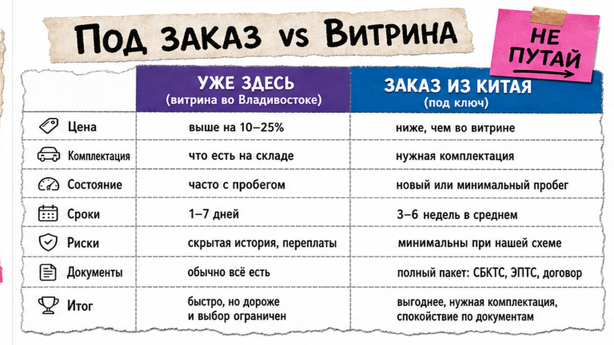
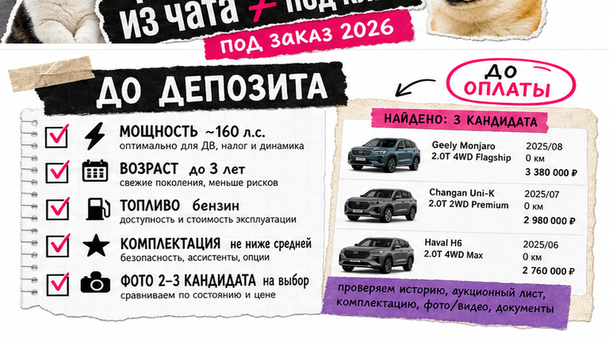
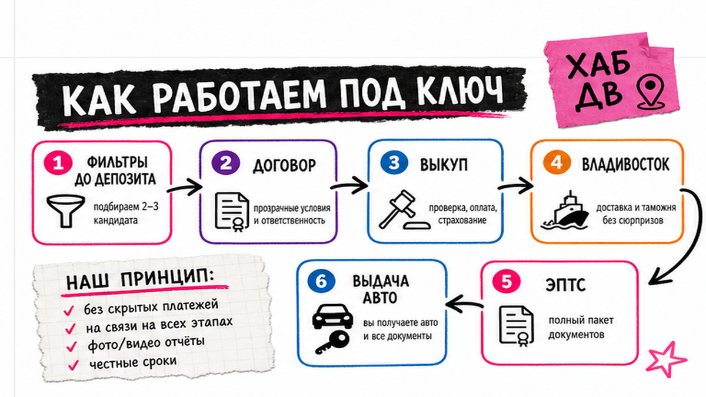

В Telegram мелькнул кроссовер из Китая "под ключ" за красивую цифру – и рука уже тянется кинуть предоплату на карту "менеджера". Стоп: типичная боль новичка – страх слить депозит на "красивую цену из Китая" и путаница между ценой у поставщика и итогом под ключ. Авто из Китая под заказ – это не витрина у дилера в городе: цена у поставщика не равна итогу на руки во Владивостоке. Ниже – карта пути: фильтры до депозита, договор с юрлицом, этапы до выдачи и стоп-правила оплаты. Результат после гайда – мини-чеклист до первой оплаты, по которому вы сможете проверить сделку до перевода.
Коротко по делу: "Под заказ" значит подбор и привоз конкретной машины под ваши фильтры, а не покупку с готовой витрины. До депозита зафиксируйте мощность, возраст, тип топлива, договор с реквизитами юрлица и разбивку статей "под ключ". Хаб выдачи – Владивосток. Точные суммы не считайте "на глаз" в чате – запросите расчёт в каталоге.
Спрос на китайские авто огромный, а новички часто переоценивают простоту сделки. По данным Дальневосточного таможенного управления за январь–май 2026 через таможни ДФО физлица ввезли около 152 тысяч легковых авто, но доля Китая – лишь около 2,6%. Картинка "быстро и дёшево из КНР" не отменяет проверку до депозита и честную таможенную стоимость.
Мы в Авто-Сейлс во Владивостоке ведём заказы из Китая, Кореи и Японии. Ниже – как заказать авто из Китая под ключ без паники и без калькулятора пошлин в статье.

На пальцах: витрина в РФ – машина уже здесь. Заказ авто из Китая – вы выбираете модель и комплектацию, компания выкупает, везёт, оформляет и выдаёт. "Под ключ" – полный путь до выдачи, а не только цена у поставщика в Китае.
Типичная ошибка: увидеть в чате "кроссовер за X под ключ" и решить, что X уже финал. На практике X почти всегда только кусок бюджета. Скрытые доплаты "потом" – красный флаг.
Сделайте: напишите "нужна машина под заказ из Китая под ключ, выдача – Владивосток / дальше по РФ, бюджет-потолок такой-то". Не делайте: путать скрин объявления в Китае с договором и итогом на руки. Избегайте оплаты, пока нет ясности, что входит в "под ключ".

До предоплаты отсейте непроходные варианты. Для физлица в 2026 льготный сегмент утильсбора завязан на мощность: ориентир для ДВС – до около 160 л.с.; для электро и части последовательных гибридов порог жёстче. Условия личного пользования и ограничения по быстрой перепродаже уточняйте у сопровождающей стороны.
На практике сначала мощность и возраст, потом мечта о топовой комплектации. Красивый мотор "под 200+" может резко поменять экономику сделки – без готовых сумм в этой статье.
Сделайте: отсеките авто по мощности и возрасту на берегу. Не делайте: платить "за бронь", пока нет ясности по мощности и комплектации.

Схема заказа:
Фильтры модели → Договор с юрлицом → Выкуп у поставщика → Логистика до Владивостока → Оформление (декларация, СБКТС/ЭПТС) → Выдача / доставка по РФ
СБКТС и ЭПТС на пальцах – документы, без которых машину сложно спокойно поставить на учёт: подтверждение безопасности и электронный паспорт. Этап оформления занимает время; обещание "через три недели в любой город без оговорок" проверяйте скептически.
Например, Владивостокская таможня по открытым данным начала 2026 сообщала о среднем сроке выпуска пассажирской декларации порядка 2–3 дней с подачи – это только кусок цепочки, не весь срок "от чата до ключей".
Сделайте: отслеживайте статусы письменно. Не делайте: верить срокам без привязки к этапам.
Разложите смету на блоки. Цифры по каждой статье – только в персональном расчёте, не из "универсальной таблицы в блоге".
| Статья бюджета | Что входит | Что спросить до оплаты |
|---|---|---|
| Авто | Цена у поставщика / комплектация | Совпадает ли инвойс с выбранным авто? |
| Расходы в Китае | Подготовка к экспорту, локальные услуги | Что уже включено, что может вырасти? |
| Логистика | Доставка до Владивостока (море/суша) | Какой маршрут и кто несёт риск по пути? |
| Таможня и утиль | Платежи по правилам для вашей мощности | Есть ли разбивка без "потом доплатите"? |
| Услуги и РФ | Комиссия, СВХ, доставка по России | Где точка выдачи и что платится отдельно? |
Важный момент: таможня может не принять "слишком красивую" заявленную цену и определить стоимость сама. Экономика на занижении – плохая идея. Инвойс, платежи и перевозка должны сходиться.
Сделайте: требуйте разбивку по статьям до депозита. Не делайте: согласовывать одну цифру "всё включено" без расшифровки.
Актуальный расчёт под вашу модель – в каталоге avto-sales125.ru. Форм на этой странице нет.
| Критерий | Китай под заказ | Корея (часто через Encar) |
|---|---|---|
| Тип предложения | Чаще новые / заводские комплектации | Чаще б/у лоты с историей |
| Что проверить до оплаты | Мощность, экспортный канал, договор, разбивка "под ключ" | VIN, отчёты истории, осмотр до депозита |
| Главный риск новичка | Путаница "цена в КНР" и итог + серый быстрый выкуп | Скрытая история без отчётов |
| Хаб для регионов РФ | Владивосток | Владивосток |
Итоговый вердикт: Нужна новая комплектация и готовы к фильтру мощности – смотрите Китай. Важнее предсказуемая история б/у – чаще логичнее Корея. Не выбирайте страну только по картинке в чате.
Сделайте: выбирайте рынок под задачу. Не делайте: считать, что "Китай = тот же Encar, только дешевле".
Вернёмся к истории из начала: человек из региона почти отправил предоплату на карту "менеджера". Ниже – стоп-лист.
Сделайте: при флаге – пауза и вопросы письменно. Не делайте: переводить "чтобы не упустили".
Критерий успеха: заполнен мини-чеклист "до депозита" и понятен следующий шаг. Так вы получите первый безопасный результат – ясный пакет вопросов до оплаты, а не импульсный перевод.
Нужен живой расчёт – откройте каталог Авто-Сейлс или напишите в Telegram @avtosales125. Офис: Владивосток, Днепровская 40а, стр. 4.
Материал проверен: редакция Авто-Сейлс (эксперты по авто под заказ из Японии, Кореи и Китая).
Достоверность: факты сверены с открытыми источниками (ДВТУ/Дром по ввозу янв–май 2026, разъяснения по утильсбору и КТС, практики импортёров) и сопровождением заказов через Владивосток; актуальные расчёты – в каталоге.
Технически да, но новичку нужна цепочка договор – экспорт – таможня – СБКТС/ЭПТС. Без опыта высокий риск депозита и корректировки стоимости. Безопаснее идти через компанию с договором и разбивкой "под ключ".
Китай чаще даёт новые модели и заводские комплектации; Корея чаще – б/у лоты с акцентом на историю до депозита. Выберите рынок под задачу, а не под картинку в чате.
Юрлицо и реквизиты из договора, мощность и возраст, фото/видео конкретного авто, разбивку статей "под ключ", отсутствие давления и занижения характеристик. Нет пакета – нет перевода.
Это ключевой хаб логистики и оформления: порт, стоянки, таможня, выдача. Планируйте путь "до Владивостока", затем доставку в свой город.
Не обязательно вручную и не по чужим таблицам из чатов. Зафиксируйте фильтры модели и запросите персональный расчёт в каталоге.
Пауза. Сверьте договор, реквизиты и разбивку сметы письменно. Если вместо ответов – давление, ищите другого исполнителя.